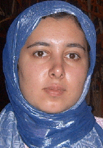

پذيرش > سایت نوشته ها > بند یک زندان اوین آخر دنیاست، باور کنید!/مریم حسین خواه


 بند یک زندان اوین آخر دنیاست، باور کنید!/مریم حسین خواه بند یک زندان اوین آخر دنیاست، باور کنید!/مریم حسین خواه
17 فروردین 1386 - - نسخه قابل چاپ
«آنجا آخر دنیا است»، این جمله ناهید کشاورز را به خوبی درک می کنم. از وقتی شنیدم ناهید و محبوبه را به بند 1 (بند تنبیهی) برده اند، مدام آن راهروی تنگ و شلوغ جلوی چشمم مجسم می شود و تصویر زن در مانده ای که تمام دستش پر از زخم تیغ و چاقو بود و وسط راهروی بند فریاد می کشید.
من این بند را دیده ام و برای همین وقتی دیروز این خبر را شنیدم هنوز تمام بدنم می لرزد. زندانی ها به آن «بند قدیم» می گویند و گاه «بند تنبیهی». مسئولان زندان آن را «بند بازسازی نشده» می نامند. معمولا همه بازدیدها از بند 3 که بازسازی شده و مخصوص متهمان مالی است انجام می شود و آنطور
که خود زندانی ها می گفتند کمتر خبرنگار و مسئولی است که بند 1 را دیده باشد.
چند سال پیش وقتی برای تهیه گزارش به اوین رفته بودم تمایل داشتم بند بازسازی نشده را ببنیم، اصرار کردم تا بالاخره اجازه دادند یک نگاه کوتاه به آن بند بیاندازم ، به شرطی که «با هیچ کس صحبت نکنم».
نیازی به شرط و شروط نبود. فضای آنجا آنقدر سنگین بود که چند دقیقه بیشتر دوام نیاوردم. جلوي همان سلول اول بی اختیار ميخكوب شدم، پايم جلو نميرفت، وقتي افسر نگهبان زندان دستم را گرفت و گفت:" بيا برويم، از دود سيگارشان خفه مي شوي. "هيچ نگفتم و ازبند خارج شدم. اعتراف می کنم که ترسیده بودم. نمی دانم از چه اما جرات داخل شدن به بند را نداشتم.
هنوز هم خوب آنجا را به خاطر دارم. یک راهرو تنگ و مخوف، که یک طرفش دیوار بود و طرف دیگر سلول هایی با درهای میله میله آهنی. دود سيگارهمه بند را در مه غليظي فرو برده بود، فضای بند از همه چیز تهی بود، پر از کمبود: کمبود هوا، کمبود تغذیه، کمبود اعتماد، کمبود محبت، کمبود نگاهی آرام، کمبود همه چیز... و راهرو كوچك و سلولهايش پر از زناني بود با جرم های: قتل، مواد مخدر و منكرات و....
بندي كه ديوارهايش رنگ نشده بود. شلوغ بود و پر از همهمهاي كه ترسناك مينمود. پنجرههايش انگار كوچكتر بودند، و زندانيانش به آرامي و مطيعي بندهای دیگر نبودند.آن جا شبيه همان زنداني بود كه هميشه وصفش را شنيده بودم.
مهوش شيخالاسلامي، كارگرداني كه در جريان ساخت دو فيلم مربوط به زنان زنداني، رابطه صميمانهاي با آنها داشت از قول آنها ميگفت:"بندي كه بازديدها معمولا از آنجا صورت می گیرد با بندي كه محكومين به سرقت و قتل و مسائل ناموسي (منظورش بند یک است) در آن زندانی هستند از زمين تا آسمان فرق دارد.بند خلافكاران بسيار شلوغ و كثيف، و زندانيان ياغي براي ساير زندانيها مشكلات زيادي درست ميكنند. در آن بند زندانيها داراي مشكلات روحي و رواني وحشتناكي هستند و روزانه چند قرص مصرف ميكنند. متاسفانه كودكانشان با آنها در سلولها هستند ومواد مخدر به وفور در بينشان رد و بدل ميشود."
در بخش سانسور شده فيلم"ماده 61" ساخته مهوش شيخالاسلامي نيز زني ميگويد: "زنهاي درشت هيكل با تيپهاي مردانه در سلولها هستند كه دو يا سه زن دارند. اين زنها با تيغ و چاقو ميآيند بالاي سر طعمههايشان و آنها را تهديد به تيغ زدن و حتا مرگ ميكنند تا همراهشان بيايند و تن به خواستههاي جنسی شان بدهند."
شاید برای همین ها بود که به شدت ترسیده بودم. برای همین ها و تصویر زنده ای که جلوی چشمانم فریز شده بود و این گفته ها را تایید می کرد.
بعدها همیشه خودم را ملامت می کردم که چرا آن روز ترسیدم و نتوانستم بروم و «زندان واقعی» را ببنیم. بار دومی که به عنوان زندانی (در 13 اسفند 85 از مقابل دادگاه انقلاب به همراه 32 نفر از فعالان جنبش زنان) به بند 209 و پس از اعتصاب غذا به بند عمومی زندان اوین منتقل شدم، وسوسه شدم از زندانبان ها بخواهم سری به بند 1 بزنم. چون این بار نه فقط از آن زن ها نمی ترسیدم بلکه احساسی مشترک یافته بودم، حسی که شاید نتوانم توضیح اش بدهم، درد مشترکی که میان من با آن ها ایجاد شده بود، درد بی پناهی و تک افتادگی در فضای متصلب بی کسی، درد بی حقوقی در فضایی که انگار با همه ی زوایای زندگی خواهرانه مان بیگانه است، درد لمس این همه بی عدالتی و حقارت شاید،...
چند لحظه ای که در بند باز شد و چند زن زندانی بیرون آمدند اما، با دیدن چهره ی بی رنگ و چشمان مضطرب و لبریز از نفرت آنان وسوسه پنهان دیدن آنجا را فراموش کردم. ناهید کشاورز حق دارد که می گوید: «آنجا آخر دنیا است». اشک های محبوبه حسین زاده را خیلی خوب می فهمم. جلوی اتاق رئیس زندان که به اعتراض نشسته بودیم، یکی از داخل همین بند یک تنبیهی ها چنان عربده می کشید که زندانبان ها هم حساب کار دستشان آمده بود.
... جوان بود. سی وچند ساله. دستش پر بود از خالکوبی و آثار خودزنی های متعدد. معتاد بود و مثل مردهایی که بارها کنار خیابان دیده ایم روی زمین چمباتمه زده بود. تسبیحش را دور دست می چرخاند و برای خواسته ای که داشت به اجبار فریاد می زد. فریادی چنان از ته دل که به ضجه می مانست، طوری که هم من و زارا و نسرین سه تایی به هم چسبیده بودیم و هم مسئولان زندان ساکت شده بودند.
آن چند تایی که من جلوی در بند 1 دیدم همه چادرها را به کمر بسته بودند و برای کوچکترین چیزی که بر وفق مرادشان نبود ضجه می زدند. یکی با عربده، سفید آب می خواست که برود حمام. دیگری زار می زد و با صدای بلند گریه می کرد، زن دیگری مچ دزد وسائلش را گرفته بود و می گفت پدرت را درمی آورم. آن یکی خمار خمار بود...
تا جایی که من می دانم در بند 1 بیشتر اوقات قفل است و زندانیان آنجا نمی توانند مانند سایر زندانی ها هر وقت که می خواستند به هواخوری بروند یا از کتابخانه و کلاس های فرهنگی استفاده کنند. باز شدن در هم چندان راحت نیست.
در سایر بندها البته اوضاع بهتر است چون امکان ارتباط با زندانبان ها و مسئولان زندان لااقل تا حدودی وجود دارد.
بند عمومی مناسبات خودش را دارد و تا کار به جاهای وخیم و خیلی خطرناک نرسد مسئولان زندان در کار زندانی ها دخالت نمی کنند. ماموران پاس شب ها و مسئولان بندها و اتاق ها از خود زندانی ها هستند و برای دیدن زندانبان ها ومسئولان زندان باید از هفت خوان رستم رد شد. شب ها هم که در بند قفل می شود و طبیعتا هیچ کسی پاسخگو نیست.
همه اینها به اضافه بی خبری و بلاتکلیفی، آدم را کلافه و درمانده می کند. اگر هم به هزار زحمت و بدبختی و التماس و با کمک مددکاری زندان یا به خاطر گرفتن قرصهایی که از بند 209 می اید بتوانی با رئیس زندان صحبت کنی و اعتراض خود را نسبت به این وضعیت هولناک به گوشش برسانی، باید تحمل داد و بیداد و توهین های زندانیانی که مسئول بند هستند را نیز داشته باشی. تحملش اما چندان آسان نیست.
ما سه نفر بودیم. در بند 3 (که بهترین بند عمومی اوین است) و بقیه دوستان مان (یعنی 30 نفر دیگر) یا در انفرادی های همان ساختمان بودند یا در بند 209. اما وقتی مسئول بند، به خاطر رفتن به طبقه پایین و تقاضای صحبت با رئیس زندان سرمان فریاد می کشید که :«من قتلی هستم، حواستون را جمع کنید.» گوشه ای کز کرده بودیم کنج سلول و نمی دانستیم باید چه جوابی به زنی که در زندان هیچ چیز برای از دست دادن ندارد بدهیم. (آیا بیرون از زندان چیزی برای از دست دادن داشت؟ آیا مثلا سهمی هر چند کوچک از درآمد عظیم نفت داشت؟ و آیا حتا فردی که به او فکر کند؟) وقتی توهین ها که سه بار دیگر نیز تکرار شد و درماندگی ما که هیچ امکانی برای رساندن صدای اعتراضمان به آن وضعیت نامناسب نداشتیم را به خاطر می آورم، به فکر بی پناهی ناهید و محبوبه می افتم که در این روزها و ساعت ها آن هم در بند یک تنبیهی که آخر دنیاست چقدر تنهایی کشیده اند.
بند عمومی وقتی که تکلیفت مشخص نباشد مثل یک دالان تاریک و بی انتها است. دالانی که نمی دانی آیا می توانی خودت را از آن رها کنی یا نه؟ در آن مغاک هولناک فراوانند زنانی که ماه ها و گاه سال ها است بلاتکلیفند و حتی حکمی هم برایشان صادر نشده و حالا عادت کرده اند به زندگی در حصار دیوارهای بلند زندان. و تو با مشاهده ی این وضعیت دردناک؛ دیگر به فکر خودت و این چند روز بازداشت مسخره نیستی، گرچه حتا اگر برای خودت هم که نگران نباشی و دلت به تلاش دوستانت قرص باشد، وضعیت آنها و تماشای آن دالان تاریک بی انتها تو را منتقلب می کند.
رفتن به بند عمومی با همه سختی هایی که دارد اما انگیزه ای دو چندان ایجاد می کند تا ناامید نشوی، خسته نشوی و تا تغییر این قوانین تبعیض آمیز از پا ننشینی. وضعیت اسف بار و تحقیرآمیز زنان زندانی (همجنسان و هموطن تو) بهترین گواه ات برای ظالمانه بودن این قوانین نابرابر و زن ستیز است.
می دانم که ناهید و محبوبه عزیز ما روزهای سختی را می گذرانند. اما مطمئنم که وقتی آزاد شوند به انگیزه های انسانی شان، تجربه های جدیدشان با زنان در آخر دنیا را نیز خواهند افزود و به این که این دنیای ظالمانه و زن ستیز باید تغییراتی بکند شک نخواهند کرد. آن هم به خاطر خودشان، به خاطر خواهرانشان، و به خاطر زنان زندانی که در رویارویی با این قوانین زن ستیز و ظالمانه، همه زندگی شان را باخته اند و به حقارت افتاده اند.
ناهید کشاورز که آزاد شود حتما یک دنیا مثال زنده و ملموس دارد برای آن نظریه ی همیشگی اش که می گفت:« زنان طبقه فرودست بیشترین قربانیان قوانین تبعیض آمیزند.»
سایت زنستان
ارسال به
بالاترین
،
توییتر
،
فریندفید
،
فیسبوک
در همين بخش :
 یک خبر تلخ؟ یک قانونشکنی؟ یک تصمیم بخشنامهای جدید؟ یک خبر تلخ؟ یک قانونشکنی؟ یک تصمیم بخشنامهای جدید؟
چرا بایست به سکسوالیته پرداخت؟ / نفیسه آزاد
آزارجنسی خانگی؛ «قربانی» نه، «نجات یافته»
زنان، بزرگترین بازندگان بهار عرب
سانسور از دیدگاه جنسیتی/الهه امانی
ديگر بخش ها :
طرح یک میلیون امضا
|
مقالات
|
سایت نوشته ها
|
اخبار
|
گزارش كمپين
|
گفت و گو
|
علیه سکوت
|
كوچه به كوچه
|
نامه های شما
|
گزارش ویژه
|
گفتگو با اعضا
|
ویژه سالگرد کمپین
|
تصویر برابری
|
دل آرام علی
|
تریبون
|
مقالات
|
تاریخ شفاهی
|
خارج از چارچوب
|
کتابخانه
|
درباره کمپین
|
کمپین در شهرها
|
کمپین در بند
|
صدای تغییر
|
ویژه 22 خرداد
|
لایحه حمایت از خانواده
|
گالری
|
عشا مومنی
|
امیر یعقوبعلی
|
خدیجه مقدم
|
راحله عسگری زاده و نسیم خسروی
|
پروین اردلان،جلوه جواهری، مریم حسین خواه، ناهید کشاورز
|
زینب پیغمبرزاده
|
سعیده امین، سارا ایمانیان، محبوبه حسین زاده، ناهید کشاورز و همایون نامی
|
احترام شادفر
|
نسیم سرابندی زاده،فاطمه دهدشتی
|
وبلاگ مهمان
|
پرونده خرم آباد
|
دستگیری ها
|
مریم مالک
|
پرستو اللهیاری
|
مهرنوش اعتمادی
|
سمیه رشیدی
|
Other Languages
|
همراهان
|
«فراخوان کمپین ده روز با بهاره هدایت»
| English
|